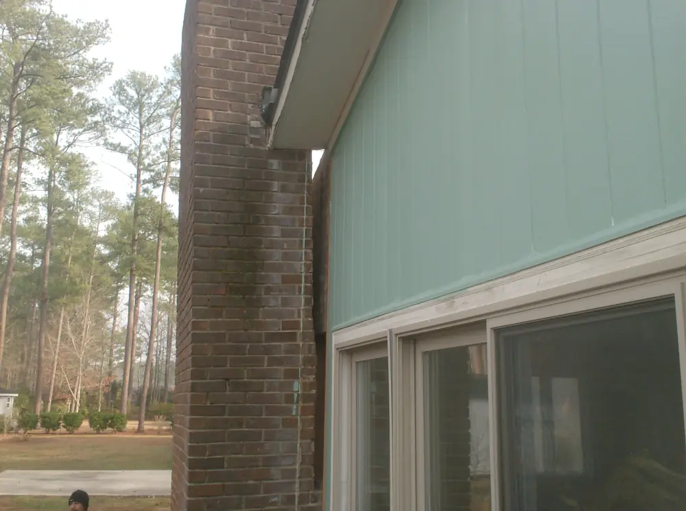
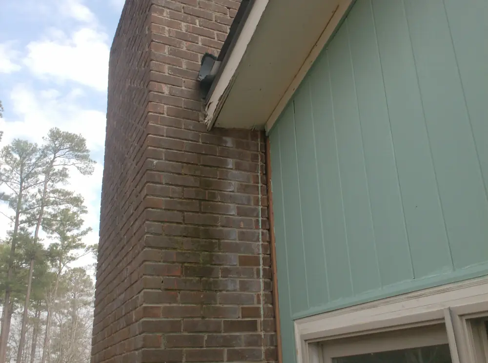
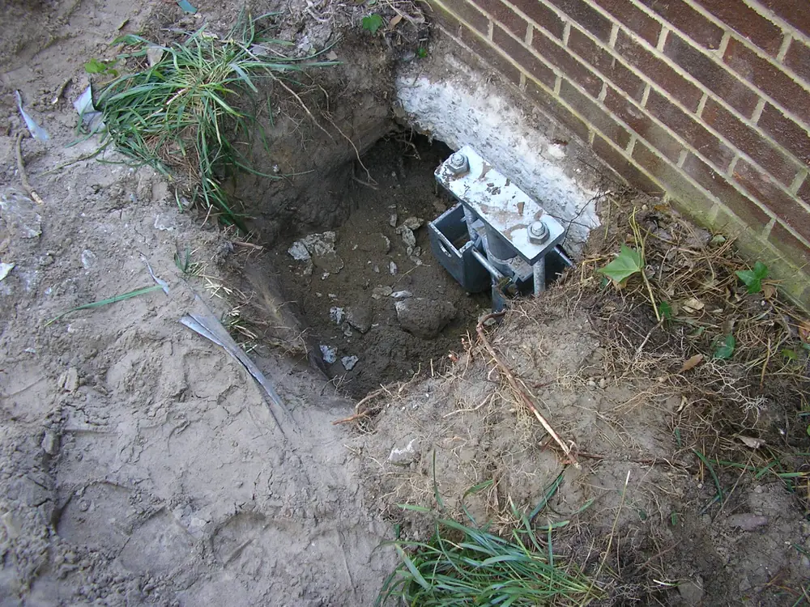

Foundation repair · New Bern and Eastern NC
An engineer inspects it. His crew levels it.
Carolina Foundation Repairs is owned by Sean Corcoran, a licensed professional engineer who personally inspects every property. Then his crew installs the piers, lifts the house and fixes the crawl space.

- Structural repair projects
- 2,000+
- their figure
- Google rating
- 4.5
- 34 reviews
- NC general contractor license
- 2004
- L.54562, active
- Engineering firm
- P‑1776
- Sean Corcoran, PE, PLLC
Field check
Signs your foundation is moving.
Eastern North Carolina has soft sandy soil and a high water table. These are the symptoms Carolina Foundation Repairs lists on its own site. If you see two or more, call for an inspection.
Inside
- Cracks in floor surfaces
- Sloping floors
- Doors and windows that don’t line up
- Cracked plaster or sheetrock
- Soft or uneven floors
Outside
- Cracks in foundation walls or brick
- Windows and doors pulling away from siding and trim
- A chimney leaning away from the house
- Bowed foundation or retaining walls
Before and after
A leaning chimney, plumb again.
Same chimney, same corner of the house. Look at the gap between the brick and the siding.


Photos from the Leaning Chimney Repair page on carolinafoundationrepairs.com, posted in 2011 and 2012. Placeholder newer before and after sets.
Repairs
Sheet index.
Every repair Carolina Foundation Repairs offers, laid out like the drawing set an engineer would hand you.
- S‑101Helical piersSteel shafts with helix plates screwed down to load bearing soil, then bracketed to the footing. Used for repairs and for new construction.
- S‑102Push piersHydraulically driven steel piers pressed down under the weight of the house until they reach firm soil, then used to lift.
- S‑103Leaning chimney repairChimneys are the heaviest part of a house per square foot, so they settle first. The fix is support under the footing, not straps to the wall.
- S‑104Crawl space repairRotted joists, caps, studs and subfloor replaced, plus grading, drainage and ventilation changes so it does not come back.
- S‑105Wall reinforcementBowed foundation and retaining walls pushed back toward plumb and reinforced.
- S‑106Mud jacking and slab levelingSunken slabs raised and supported from below.
- S‑107New construction foundationsHelical pier foundations for new buildings: no concrete curing, no vibration, loaded the same day.
What a customer saw
“The process of putting in pilings, jacking up the sloping parts of the house, and monitoring with lasers was amazing to me. It is of course an expensive process too but we now have level floors!”
Google review, January 2020
Reviews
4.5 stars from 34 Google reviews.
I have nothing but positive things to say about Carolina Foundation Repairs. From my first interaction with the office personnel, to Sean’s inspection, to the crew performing the job, I was pleased with their work and communication. I thank Sean for not demanding that my entire encapsulation be redone at great expense as another company did at their inspection. Instead, Sean made a plan to improve the existing encapsulation, provide a better entry into the crawlspace, install flood vents to comply with insurance regulations, and do what was necessary to support the existing framework in the...
Did great work for me on my 100 yr old house. Their work exceeded expectations and the cost was way less than expected. Delt mostly with Sean who was amazing, personable and professional, the woman I spoke to whenever I called the office was a sweetheart and walked me through what I was confused about. Repeat customer, saved me from wasting several thousand on a “crawlspace specialist”’s recommendations that were definitely predatory. Highly recommend.
Sean and his crew were outstanding! I’m a real estate broker and his estimate was only a 1/3 of all the others! Sean took a tough situation and gave us hope! Patty at the office is also wonderful! They are my new “go to” people for foundation problems! I can’t express my appreciation enough.
Engineering
Need a report, not a repair?
Sean Corcoran, PE also does structural investigations, insurance cause of loss inspections, pre purchase evaluations and expert witness work through his engineering firm.
Engineering services